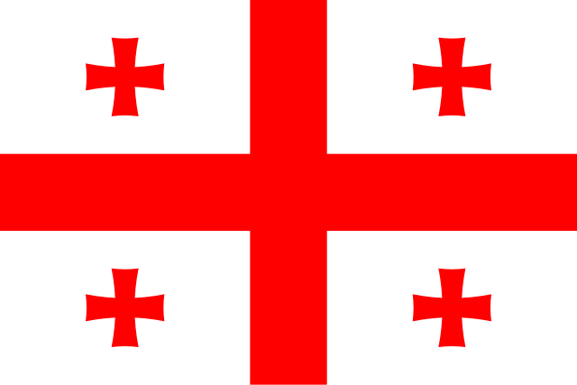
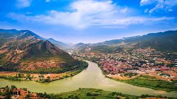
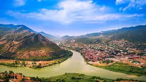
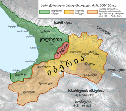

Georgia[c] is a country in Eastern Europe and West Asia.[14][15][16] It is part of the Caucasus region, bounded by the Black Sea to the west, Russia to the north and northeast, Turkey to the southwest, Armenia to the south, and Azerbaijan to the southeast. Georgia covers an area of 69,700 square kilometres (26,900 sq mi).[17] It has a population of 3.7 million,[d][18] of which over a third live in the capital and largest city, Tbilisi. Georgians, who are native to the region, constitute a majority of the country's population and are its titular nation. Georgia has been inhabited since prehistory, hosting the world's earliest known sites of winemaking, gold mining, and textiles.[19][20] The classical era saw the emergence of several kingdoms, such as Colchis and Iberia, that formed the nucleus of the modern Georgian state. In the early fourth century, Georgians officially adopted Christianity, which contributed to their unification under the Kingdom of Georgia. Georgia reached its Golden Age during the High Middle Ages under the reigns of King David IV and Queen Tamar. Beginning in the 15th century, the kingdom declined and disintegrated under pressure from various regional powers, including the Mongols, the Ottoman Empire, and Persia, before being gradually annexed into the Russian Empire starting in 1801. After the Russian Revolution in 1917, Georgia briefly emerged as an independent republic under German protection,[21] but was invaded and annexed by the Red Army in 1921, becoming one of the republics of the Soviet Union. In the 1980s, an independence movement grew quickly, leading to Georgia's secession from the Soviet Union in April 1991. For much of the subsequent decade, the country endured economic crises, political instability, and secessionist wars in Abkhazia and South Ossetia. Following the peaceful Rose Revolution in 2003, Georgia strongly pursued a pro-Western foreign policy, introducing a series of democratic and economic reforms aimed at integration into the European Union and NATO. This Western orientation led to worsening relations with Russia, culminating in the Russo-Georgian War of 2008 and continued Russian occupation of parts of Georgia. Georgia is a representative democracy governed as a unitary parliamentary republic.[22][23] It is a developing country with a very high Human Development Index and an emerging market economy. Sweeping economic reforms since 2003 have resulted in one of the freest business climates in the world, greater economic freedom and transparency, and among the fastest rates of GDP growth.[24] In 2018, Georgia became the second country to legalize cannabis, and the first former socialist state to do so. Georgia is a member of numerous international organizations, including the Council of Europe, Eurocontrol, BSEC, GUAM, Energy Community. As part of the Association Trio, Georgia is an official candidate for membership in the European Union.[25] Since October 2024, Georgia is immersed in a deep political crisis.
The official name of the country is Georgia per Article 2 of the Georgian Constitution,[35] adopted in 1995. In Georgia's two official languages (Georgian and Abkhaz), the country is named საქართველო (Sakartvelo) and Қырҭтәыла (Kərttʷʼəla) respectively. Prior to the adoption of the Constitution in 1995 and following the dissolution of the USSR, the country was officially called the "Republic of Georgia".[36][37] Several languages continue to use the Russian variant of the country's name, Gruzia, which the Georgian authorities have sought to replace hrough diplomatic campaigns. Since 2006, Israel,[38] Japan,[39] South Korea[40] and Hungary[41][42] officially changed their appellation of the country to variants of the English Georgia.[43] In 2020, Lithuania became the first country in the world to adopt Sakartvelas in all official communications.[44]
 

A second Georgian tribal union emerged on the Black Sea coast in the 13th century BC under the Kingdom of Colchis in western Georgia. [16][17] The kingdom of Colchis, which existed from the 6th to the 1st centuries BC is regarded as the first early Georgian state formation and the term Colchians was used as the collective term for early Georgian-Kartvelian tribes such as Mingrelians, Lazs, and Chans who populated the eastern coast of the Black Sea.[18][19][20][21][22][23][24] Colchis appears as the first Caucasian State to have achieved the coalescence of the newcomer, Colchis can be justly regarded as not a proto-Georgian, but a Georgian (West Georgian) kingdom....It would seem natural to seek the beginnings of Georgian social history in Colchis, the earliest Georgian formation.[25] The ancient Greeks knew of Colchis, and it featured in the Greek legend of Jason and the Argonauts, who travelled there in search of the Golden Fleece. Starting around 2000 BC, northwestern Colchis was inhabited by the Svan and Zan peoples of the Kartvelian tribes. Another important ethnic element of ancient Colchis were Greeks who between 1000 and 550 BC established many trading colonies in the coastal area, among them Naessus, Pityus, Dioscurias (modern Sukhumi), Guenos, Phasis (modern Poti), Apsaros, and Rhizos (modern Rize in Turkey). In the eastern part of Georgia, there was a struggle for the leadership among the various Georgian confederations during the 6th–4th centuries BC, which was finally won by the Kartlian tribes from the region of Mtskheta. According to the Georgian tradition , the Kingdom of Kartli (known as Iberia in the Greek-Roman literature) was founded around 300 BC by Parnavaz I, the first ruler of the Parnavazid dynasty.[26] Between 653 and 333 BC, both Colchis and Iberia survived successive invasions by the Iranian Median Empire. The case is different for the Achaemenid Persians however.[27] According to Herodotus (3.97), Achaemenid power extended as far as the Caucasus mountains, but the Colchians are not included in his list of the twenty Persian satrapies. Nor are they referred to in the lists of Achaemenid lands (dahyāva) given in the Old Persian inscriptions of Darius and his successors.[27] In Xenophon's Anabasis (7.8.25; probably an interpolation) the tribes of Colchis and East Pontus are referred to as independent (autónomoi). On the other hand, Herodotus mentioned both the Colchians and various Pontic tribes in his catalogue (7.78–79) of approximately fifty-seven peoples who participated in Xerxes' expedition against Greece in 481–80 BC.[27] As the Encyclopaedia Iranica states, it is thus probable that the Achaemenids never succeeded in asserting effective rule over Colchis, though local tribal leaders seem to have acknowledged some kind of Persian suzerainty.[27] The Encyclopædia Iranica further states, whereas the adjoining Pontic tribes of the nineteenth satrapy and the Armenians of the thirteenth are mentioned as having paid tribute to Persia, the Colchians and their Caucasian neighbors are not; they had, however, undertaken to send gifts (100 boys and 100 girls) every five years (Herodotus 3.97).[27] At the end of the 4th century BC, southern Iberia witnessed the invading armies of Alexander the Great, who established a vast Greco- Macedonian empire to the south of the Caucasus. Neither Iberia nor Colchis was incorporated into the empire of Alexander or any of the successor Hellenistic states of the Middle East.[27] However, the culture of ancient Greece still had a considerable influence on the region, and Greek was widely spoken in the cities of Colchis. In Iberia Greek influence was less noticeable and Aramaic was widely spoken.[27] Between the early 2nd century BC and the late 2nd century AD both Colchis and Iberia, together with the neighboring countries, became an arena of long and devastating conflicts between major and local powers such as Rome, Armenia and the short-lived Kingdom of Pontus. Pompey's campaign in 66–65 BC annexed Armenia and then he headed north along the Kura river and then west down the Rioni river to the Black Sea. [28] In 189 BC, the rapidly growing Kingdom of Armenia took over more than half of Iberia, conquering the southern and southeastern provinces of Gogarene, Taokhia and Heniochia, as well as some other territories. Between 120 and 63 BC, Armenia's ally Mithridate VI Eupator of Pontus conquered all of Colchis and incorporated it into his kingdom, embracing almost all of Asia Minor as well as the eastern and northern Black Sea coastal areas.
 Click to Know more about Georgias historyFrance,[IX] officially the French Republic,[X] is a country located primarily in Western Europe. Its overseas regions and territories include French Guiana in South America, Saint Pierre and Miquelon in the North Atlantic, the French West Indies, and many islands in Oceania and the Indian Ocean, giving it one of the largest discontiguous exclusive economic zones in the world. Metropolitan France shares borders with Belgium and Luxembourg to the north, Germany to the northeast, Switzerland to the east, Italy and Monaco to the southeast, Andorra and Spain to the south, and a maritime border with the United Kingdom to the northwest. Its metropolitan area extends from the Rhine to the Atlantic Ocean and from the Mediterranean Sea to the English Channel and the North Sea. Its eighteen integral regions—five of which are overseas—span a combined area of 632,702 km2 (244,288 sq mi) and have an estimated total population of over 68.6 million as of January 2025. France is a semi-presidential republic and its capital, largest city and main cultural and economic centre is Paris. Metropolitan France was settled during the Iron Age by Celtic tribes known as Gauls before Rome annexed the area in 51 BC, leading to a distinct Gallo-Roman culture. In the Early Middle Ages, the Franks formed the kingdom of Francia, which became the heartland of the Carolingian Empire. The Treaty of Verdun of 843 partitioned the empire, with West Francia evolving into the Kingdom of France. In the High Middle Ages, France was a powerful but decentralized feudal kingdom, but from the mid-14th to the mid-15th centuries, France was plunged into a dynastic conflict with England known as the Hundred Years' War. In the 16th century, French culture flourished during the French Renaissance and a French colonial empire emerged. Internally, France was dominated by the conflict with the House of Habsburg and the French Wars of Religion between Catholics and Huguenots. France was successful in the Thirty Years' War and further increased its influence during the reign of Louis XIV. The French Revolution of 1789 overthrew the Ancien Régime and produced the Declaration of the Rights of Man, which expresses the nation's ideals to this day. France reached its political and military zenith in the early 19th century under Napoleon Bonaparte, subjugating part of continental Europe and establishing the First French Empire. The collapse of the empire initiated a period of relative decline, in which France endured the Bourbon Restoration until the founding of the French Second Republic which was succeeded by the Second French Empire upon Napoleon III's takeover. His empire collapsed during the Franco-Prussian War in 1870. This led to the establishment of the Third French Republic, and subsequent decades saw a period of economic prosperity and cultural and scientific flourishing known as the Belle Époque. France was one of the major participants of World War I, from which it emerged victorious at great human and economic cost. It was among the Allies of World War II, but it surrendered and was occupied in 1940. Following its liberation in 1944, the short-lived Fourth Republic was established and later dissolved in the course of the defeat in the Algerian War. The current Fifth Republic was formed in 1958 by Charles de Gaulle. Algeria and most French colonies became independent in the 1960s, with the majority retaining close economic and military ties with France. France retains its centuries-long status as a global centre of art, science, and philosophy. It hosts the fourth-largest number of UNESCO World Heritage Sites and is the world's leading tourist destination, having received 100 million foreign visitors in 2023. A developed country, France has a high nominal per capita income globally, and its advanced economy ranks among the largest in the world by both nominal GDP and PPP-adjusted GDP. It is a great power, being one of the five permanent members of the United Nations Security Council and an official nuclear-weapon state. The country is part of multiple international organizations and forums.

In 486, Clovis I, leader of the Salian Franks, defeated Syagrius at Soissons and subsequently united most of northern and central Gaul under his rule. Clovis then recorded a succession of victories against other Germanic tribes such as the Alamanni at Tolbiac. In 496 Clovis started a war against the Goths in Aquitanië, which was mainly aimed for gathering loot. It took the Gothic king Alaric II two years to push back the Franks. In 507 a second war started. This time Clovis defeated Alaric II at Vouillé and annexed Aquitaine, and thus Toulouse, into his Frankish kingdom.[13] After his victory the pagan Clovis adopted Catholicism. This gave him greater legitimacy and power over his Christian subjects and granted him clerical support against the Arian Visigoths. Main article: Franco-Visigothic Wars The Goths retired to Toledo in what would become Spain. Clovis made Paris his capital and established the Merovingian dynasty but his kingdom would not survive his death in 511. Under Frankish inheritance traditions, all sons inherit part of the land, so four kingdoms emerged: centered on Paris, Orléans, Soissons, and Rheims. Over time, the borders and numbers of Frankish kingdoms were fluid and changed frequently. Also during this time, the Mayors of the Palace, originally the chief advisor to the kings, would become the real power in the Frankish lands; the Merovingian kings themselves would be reduced to little more than figureheads.[13] By this time Muslims had conquered Hispania and Septimania became part of the Al-Andalus, which were threatening the Frankish kingdoms. Duke Odo the Great defeated a major invading force at Toulouse in 721 but failed to repel a raiding party in 732. The mayor of the palace, Charles Martel, defeated that raiding party at the Battle of Tours and earned respect and power within the Frankish Kingdom. The assumption of the crown in 751 by Pepin the Short (son of Charles Martel) established the Carolingian dynasty as the kings of the Franks.
 click to know more about france history
click to know more about france history
Spain,[f] also the Kingdom of Spain,[a][g] is a country in southwestern Europe with territories in North Africa.[h] Featuring the southernmost point of continental Europe, it is the largest country in Southern Europe and the fourth-most populous European Union member state. Spanning across the majority of the Iberian Peninsula, its territory also includes the Canary Islands, in the Eastern Atlantic Ocean, the Balearic Islands, in the Western Mediterranean Sea, and the autonomous cities of Ceuta and Melilla, in Africa. Peninsular Spain is bordered to the north by France, Andorra, and the Bay of Biscay; to the east and south by the Mediterranean Sea and Gibraltar; and to the west by Portugal and the Atlantic Ocean. Spain's capital and largest city is Madrid, and other major urban areas include Barcelona, Valencia, Seville, Zaragoza, Málaga, Murcia, and Palma de Mallorca. In early antiquity, the Iberian Peninsula was inhabited by Celts, Iberians, and other pre-Roman peoples. With the Roman conquest of the Iberian peninsula, the province of Hispania was established. Following the Romanisation and Christianisation of Hispania, the fall of the Western Roman Empire ushered in the inward migration of tribes from Central Europe, including the Visigoths, who formed the Visigothic Kingdom centred on Toledo. In the early eighth century, most of the peninsula was conquered by the Umayyad Caliphate, and during early Islamic rule, Al-Andalus became a dominant peninsular power centred on Córdoba. The several Christian kingdoms that emerged in Northern Iberia, chief among them Asturias, León, Castile, Aragon and Navarre, made an intermittent southward military expansion and repopulation, known as the Reconquista, repelling Islamic rule in Iberia, which culminated with the Christian seizure of the Nasrid Kingdom of Granada in 1492. The dynastic union of the Crown of Castile and the Crown of Aragon in 1479 under the Catholic Monarchs is often considered the de facto unification of Spain as a nation state. During the Age of Discovery, Spain pioneered the exploration and conquest of the New World, made the first circumnavigation of the globe and formed one of the largest empires in history.[11] The Spanish Empire reached a global scale and spread across all continents, underpinning the rise of a global trading system fueled primarily by precious metals. In the 18th century, the Bourbon Reforms, particularly the Nueva Planta decrees, centralized mainland Spain, strengthening royal authority and modernizing administrative structures.[12] In the 19th century, after the victorious Peninsular War against Napoleonic occupation forces, the following political divisions between liberals and absolutists led to the breakaway of most of the American colonies. These political divisions finally converged in the 20th century with the Spanish Civil War, giving rise to the Francoist dictatorship that lasted until 1975. With the restoration of democracy and its entry into the European Union, the country experienced an economic boom that profoundly transformed it socially and politically. Since the Spanish Golden Age, Spanish art, architecture, music, poetry, painting, literature, and cuisine have been influential worldwide, particularly in Western Europe and the Americas. As a reflection of its large cultural wealth, Spain is the world's second-most visited country, has one of the world's largest numbers of World Heritage Sites, and it is the most popular destination for European students.[13] Its cultural influence extends to over 600 million Hispanophones, making Spanish the world's second-most spoken native language and the world's most widely spoken Romance language.[14] Spain is a secular parliamentary democracy and a constitutional monarchy,[15] with King Felipe VI as head of state. A developed country, it is a major advanced capitalist economy,[16] with the world's fifteenth-largest by both nominal GDP and PPP-adjusted GDP. It is also currently the fourth largest economy in the European Union. Spain is a member of the United Nations, the European Union, the eurozone, North Atlantic Treaty Organisation (NATO), a permanent guest of the G20, and is part of many other international organisations such as the Council of Europe (CoE), the Organisation of Ibero-American States (OEI), the Union for the Mediterranean, the Organisation for Economic Co-operation and Development (OECD), the Organisation for Security and Co-operation in Europe (OSCE), and the World Trade Organisation (WTO).

the history of Spain dates to contact between the pre-Roman peoples of the Mediterranean coast of the Iberian Peninsula with the Greeks and Phoenicians. During Classical Antiquity, the peninsula was the site of multiple successive colonizations of Greeks, Carthaginians, and Romans. Native peoples of the peninsula, such as the Tartessos, intermingled with the colonizers to create a uniquely Iberian culture. The Romans referred to the entire peninsula as Hispania, from which the name "Spain" originates. As was the rest of the Western Roman Empire, Spain was subject to numerous invasions of Germanic tribes during the 4th and 5th centuries AD, resulting in the end of Roman rule and the establishment of Germanic kingdoms, marking the beginning of the Middle Ages in Spain. Germanic control lasted until the Umayyad conquest of Hispania began in 711. The region became known as Al-Andalus, and except for the small Kingdom of Asturias, the region remained under the control of Muslim-led states for much of the Early Middle Ages, a period known as the Islamic Golden Age. By the time of the High Middle Ages, Christians from the north gradually expanded their control over Iberia, a period known as the Reconquista. As they expanded southward, a number of Christian kingdoms were formed, including the Kingdom of Navarre, the Kingdom of León, the Kingdom of Castile, and the Kingdom of Aragon. They eventually consolidated into two roughly equivalent polities, the Crown of Castile and the Crown of Aragon. The early modern period is generally dated from the union of the Crowns of Castile and Aragon by royal marriage in 1469. The joint rule of Isabella I and Ferdinand II is historiographically considered the foundation of a unified Spain. The conquest of Granada, and the first voyage of Columbus, both in 1492, made that year a critical inflection point in Spanish history. The voyages of the explorers and conquistadors of Spain during the subsequent decades helped establish a Spanish colonial empire which was among the largest ever. King Charles I established the Spanish Habsburg dynasty. Under his son Philip II the Spanish Golden Age flourished, the Spanish Empire reached its territorial and economic peak, and his palace at El Escorial became the center of artistic flourishing. However, Philip's rule also saw the destruction of the Spanish Armada, a number of state bankruptcies and the independence of the Northern Netherlands, which marked the beginning of the slow decline of Spanish influence in Europe. Spain's power was further tested by its participation in the Eighty Years' War, whereby it tried and failed to recapture the newly independent Dutch Republic, and the Thirty Years' War, which resulted in continued decline of Habsburg power in favor of the French Bourbon dynasty. Matters came to a head with the death of the last Habsburg ruler Charles II of Spain; the War of the Spanish Succession broke out between two European alliances led by the French Bourbons and the Austrian Habsburgs, for the control of the Spanish throne. The Bourbons prevailed, resulting in the ascension of Philip V of Spain, who took Spain into various wars and eventually recaptured the territories in southern Italy that had been lost in the War of the Spanish Succession. Spain's late entry into the Seven Years' War was the result of fear of the growing successes of the British at the expense of the French, but Spanish forces suffered major defeats. Motivated by this and earlier setbacks during Bourbon rule, Spanish institutions underwent a period of reform, especially under Charles III, that culminated in Spain's largely successful involvement in the American War of Independence. During the Napoleonic era, Spain became a French puppet state. Concurrent with, and following, the Napoleonic period the Spanish American wars of independence resulted in the loss of most of Spain's territory in the Americas in the 1820s. During the re-establishment of the Bourbon rule in Spain, constitutional monarchy was introduced in 1813. Spain's history during the nineteenth century was tumultuous, and featured alternating periods of republican-liberal and monarchical rule. The Spanish–American War led to losses of Spanish colonial possessions and a series of military dictatorships, during which King Alfonso XIII was deposed and a new Republican government was formed. Ultimately, the political disorder within Spain led to a coup by the military which led to the Spanish Civil War. After much foreign intervention on both sides, the Nationalists emerged victorious; Francisco Franco led a fascist dictatorship for almost four decades. Franco's death ushered in a return of the monarchy under King Juan Carlos I, which saw a liberalization of Spanish society and a re-engagement with the international community. A new liberal Constitution was established in 1978. Spain entered the European Economic Community in 1986 (transformed into the European Union in 1992), and the Eurozone in 1998. Juan Carlos abdicated in 2014, and was succeeded by his son Felipe VI.
 click to know more about spains history
click to know more about spains history